Integrantes do Grupo
Equipe responsável pelo desenvolvimento do sistema AETHER:
Maria Eduarda Belentani Endo, 19
Sistemas de Informação
Giselle Luz Leite, 19
Sistemas de Informação
Julia de Melo Almeida, 20
Sistemas de Informação
Felipe Santos, 25
Ciências da Computação
Ryan Natanael da Silva, 20
Ciências da Computação
Guilherme Laurenço, 25
Sistemas de Informação
Segundo Termo: Desenvolvimento do Projeto
Modelagem de Banco de Dados
A estrutura do banco de dados do AETHER foi planejada para garantir integridade e eficiência no gerenciamento das informações da confeitaria.
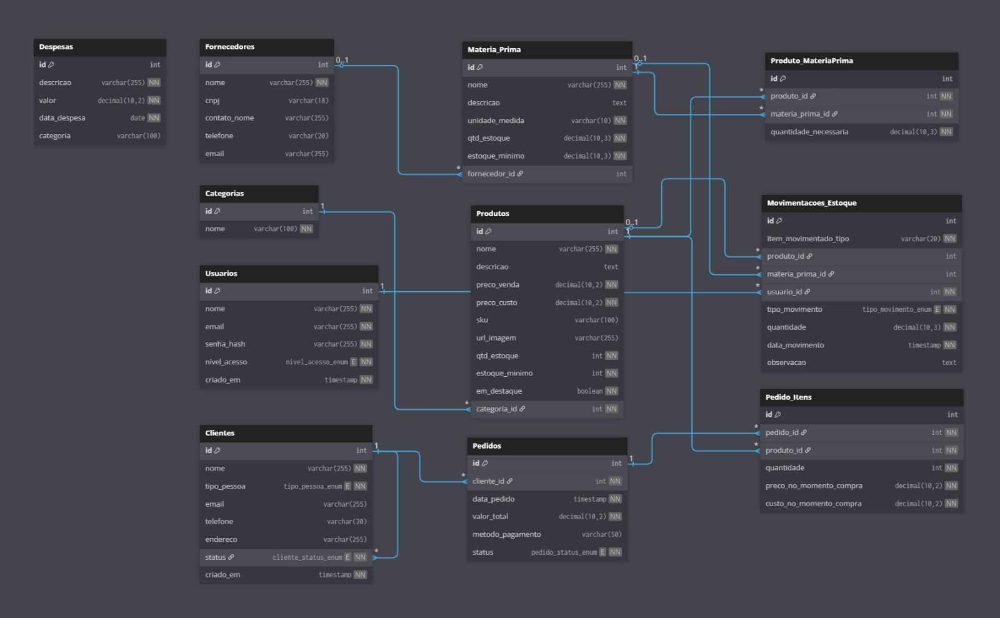
O DER representa entidades como Clientes, Pedidos, Produtos, Ingredientes, Usuários e Controle de Estoque.
Gestão de Projetos
Matéria do quarto semestre de Sistemas de Informação.
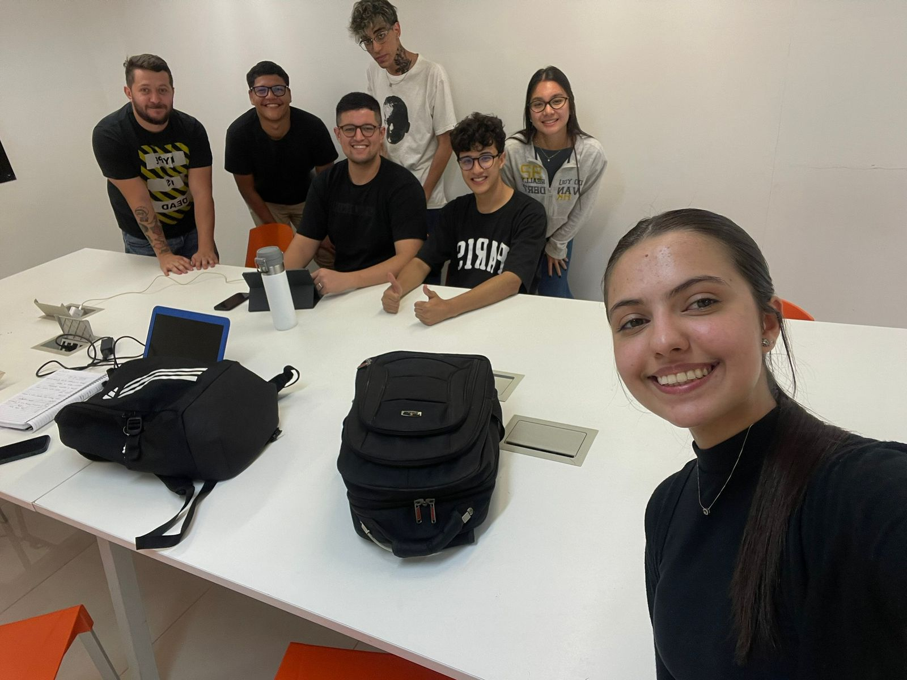
05/09/2025
Primeira reunião do grupo onde foi definido todas as tarefas.
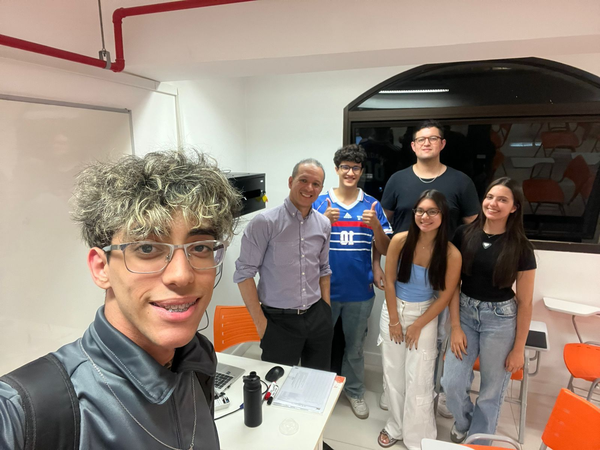
19/09/2025
Segunda reunião do grupo e primeira com o professor orientador Julio Cesar onde foram definidos todos os caminhos do projeto e referências bibliográficas.
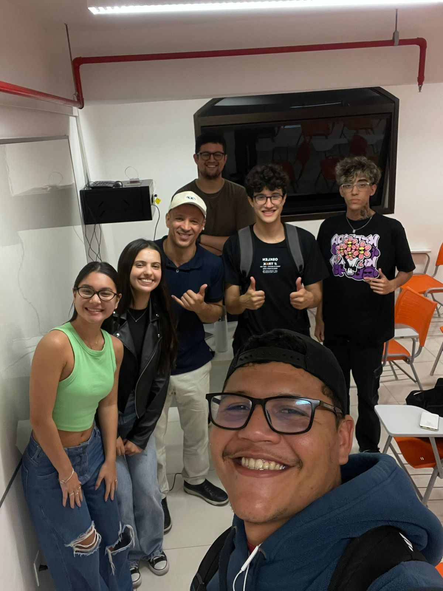
03/10/2025
Terceira reunião do grupo onde mostramos ao professor orientador o artigo do projeto, onde havia a introdução e metodologia científica.
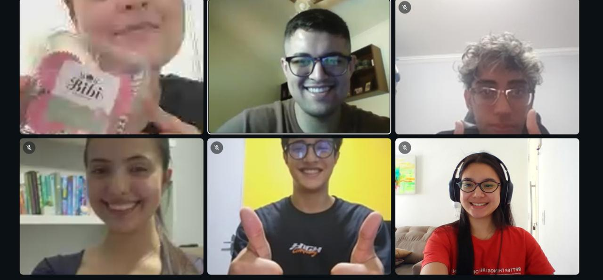
05/10/2025
Reunião on-line com a empresa BibiBrigadeiros para alinhar estratégias e pensamentos.
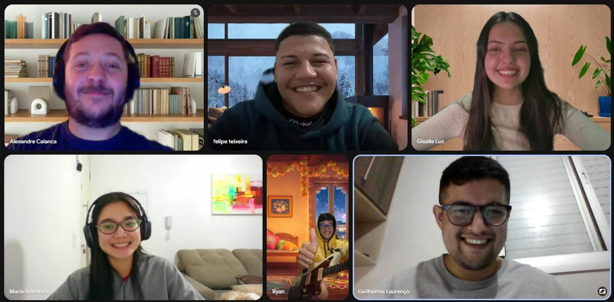
10/10/2025
Reunião on-line feita para definição da modelagem de dados para o projeto.
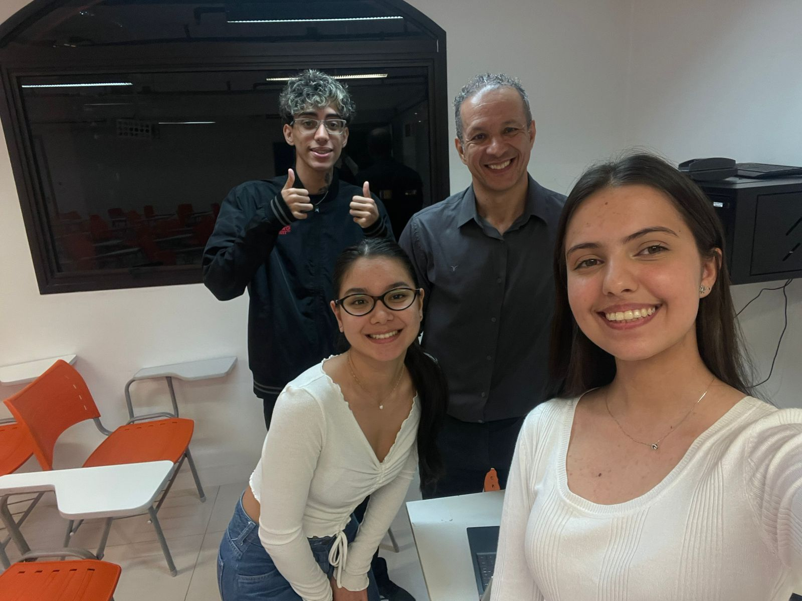
28/10/2025
Reunião feita para mostrar o site do projeto ao professor orientador e alinhar os últimos detalhes.
Kanban do Projeto
Utilizamos o Microsoft Planner para organizar as tarefas e monitorar o progresso do desenvolvimento. Essa abordagem facilitou o acompanhamento das entregas e a colaboração entre os integrantes.
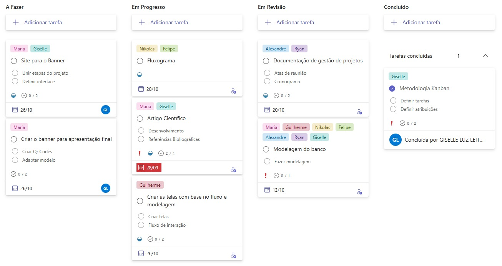
O Kanban ajudou a priorizar tarefas, dividir responsabilidades e visualizar o status (A fazer / Em progresso / Em revisão / Concluído). Foi fundamental para manter sincronia entre os membros.
Demonstração do Sistema
Acesse o site interativo criado para demonstrar o funcionamento do sistema AETHER e a integração com o banco de dados.
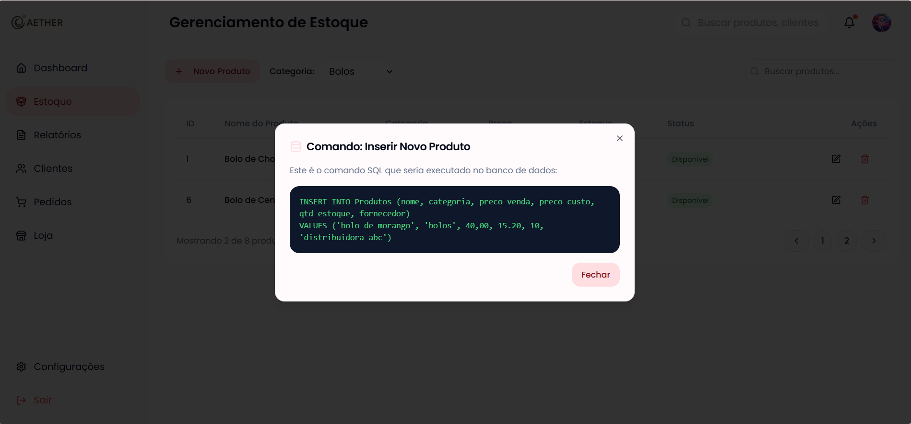
O site contém prompts e exemplos que mostram a comunicação com o banco de dados e as principais telas do sistema (cadastro, pedidos, estoque, relatórios).
Acesse o siteConteúdos Principais do PI
Abaixo, os materiais desenvolvidos ao longo do Projeto Integrador.
Acessar Artigo Acessar BannerTerceiro Termo: Próximos Passos do Projeto
Kanban do Projeto
A abordagem foi mantida ao longo do projeto devido à sua eficiência no acompanhamento das entregas, na divisão de responsabilidades e na colaboração entre os integrantes.
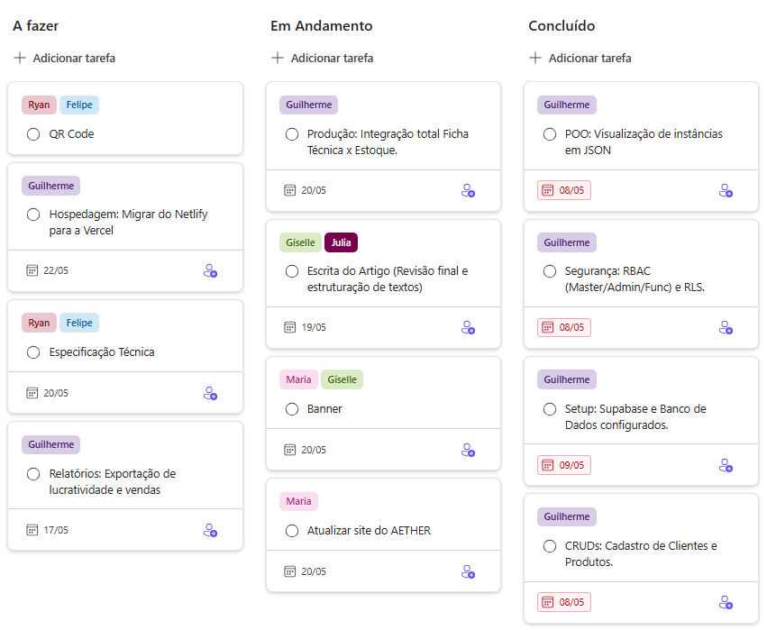
Quadro Kanban utilizado no gerenciamento das atividades do projeto AETHER, permitindo organização, acompanhamento e distribuição das tarefas de desenvolvimento.
Remodelagem de Banco de Dados
A estrutura do banco de dados do AETHER foi replanejada para garantir integridade e eficiência no gerenciamento das informações da confeitaria.
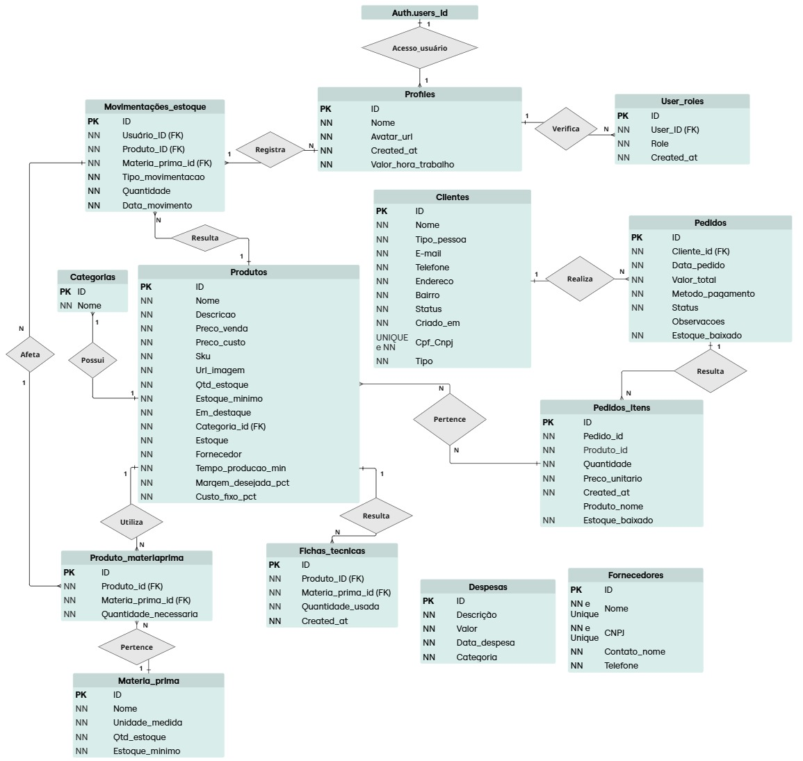
Diagrama Entidade-Relacionamento (DER) do sistema AETHER, apresentando a estrutura do banco de dados e a integração entre estoque, pedidos, produtos, usuários e fichas técnicas.
Automação de Produção e Estoque Inteligente
Foi desenvolvido um módulo de automação de produção baseado em Ficha Técnica, responsável por controlar insumos, custos e estoque dos produtos. Também foi criada a função “Produzir”, que automatiza a fabricação ao verificar a disponibilidade dos materiais, realizar a baixa das matérias-primas e atualizar automaticamente o estoque do produto final.
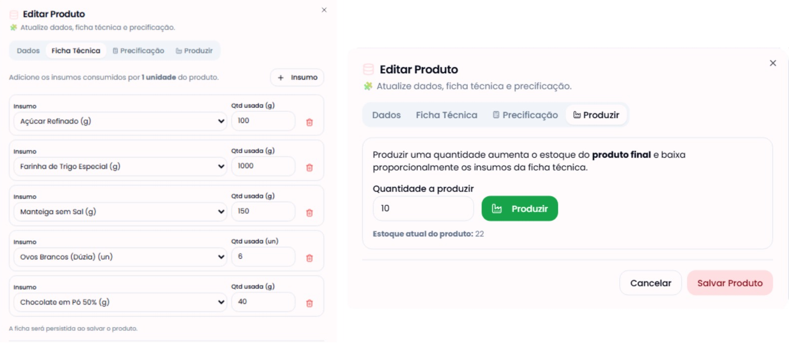
Fluxo automatizado do processo de produção e baixa de estoque.
Dashboard Analítico e Business Intelligence
O sistema passou a incorporar funcionalidades de BI, transformando dados operacionais em indicadores estratégicos para apoio à tomada de decisões. O dashboard desenvolvido permite acompanhar métricas como margem de lucro, custos de produção, movimentação de estoque e desempenho de vendas.
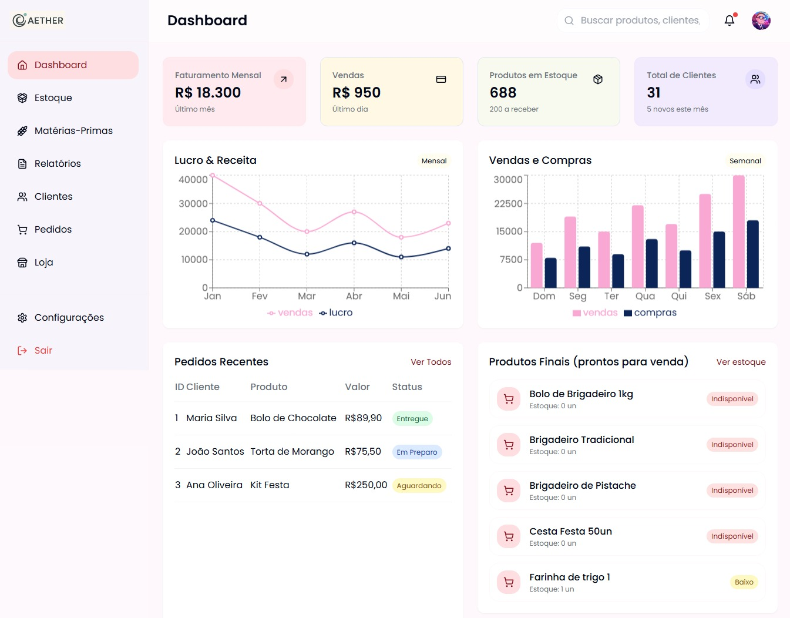
Dashboard analítico do sistema AETHER.
Acesse o siteConteúdos Principais do PI
Abaixo, os materiais desenvolvidos ao longo do Projeto Integrador.
Acessar Artigo Acessar Banner